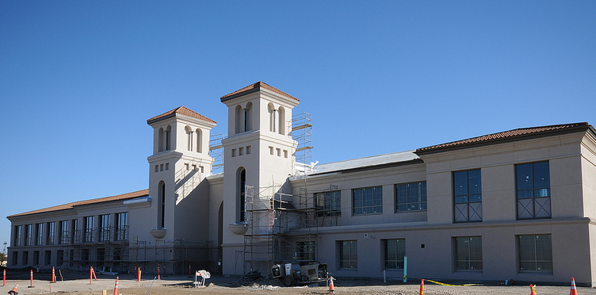

Mountain House is home to over 30,000 residents as of the beginning of 2026 (Durbin, 2026).
However, there is only one high school serving the entire city. If a new high school were to be built, its location should be
informed by the needs of the residents, not the pre-established plans created by developers.
This project aims to understand the experiences of current high school students and their parents as they commute to school.
As a lifetime resident of Mountain House, I hope that community leaders continuously listen to the people they serve as the
city continues to grow.
Mountain House is divided into different villages, each with their own K-8 school. Some villages (namely
College Park and Lakeshore) are still in development. Click on the buttons below to explore!
Take the Survey Below